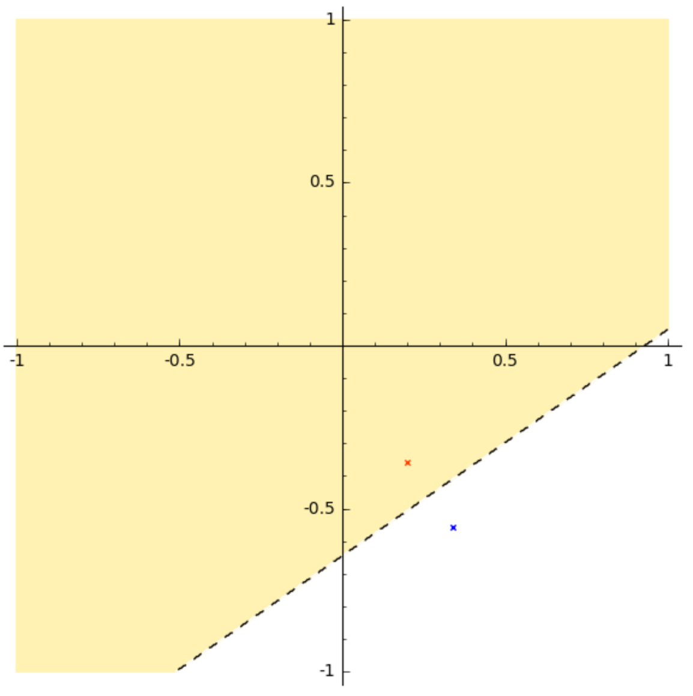

\(\newcommand{\R}{\mathbb{R}}\) \(\newcommand{\scalar}[2]{\langle #1,#2 \rangle}\)
Source: [BV] Exercise 2.7.
Voronoi description of a halfspace
Let \(a\) and \(b\) be distinct points in \(\R^n\). Show that the set of all points that are closer in Euclidean norm to \(a\) than \(b\) is a halfspace. Describe it explicitly as an inequality of the form \(c^T x \leq d\). Draw a picture.
Solution. (MF)
Let \(V_a = \{ x \in \R^n : ||x-a||_2 \leq ||x-b||_2 \}\). The set \(V_a\) is corresponds to all points that are closer to \(a\) than to \(b\). Expanding \[ \scalar{x-a}{x-a} \leq \scalar{x-b}{x-b}, \] we find after some algebra that \[ \scalar{b-a}{x}\leq \dfrac{||b||^2_2 - ||a||^2_2}{2}. \] Consequently, \(V_a\) is the polyhedron \(V_a = \{ x \in \R^n : c^T x \leq d \}\), with \(c = b-a \in \R^n\), and \(d = \dfrac{||b||^2_2 - ||a||^2_2}{2}\).
For the draw, let us consider two random points in the square \([-1,1]^2\), and build the polyhedron that we have just found.
a = random_vector(RR, 2, min = -1, max = 1)
b = random_vector(RR, 2, min = -1, max = 1)
norm2 = lambda x : sqrt(sum(xi*xi for xi in x))
d = (norm2(b)^2-norm2(a)^2)/2
c = b - a
# plot the points a and b
drawing = point(a, color='red', marker='x') + point(b, color='blue',marker='x')
# plot the region, with some (optional) formatting tweaks
drawing += region_plot(lambda x, y: c[0]*x + c[1]*y <= d ,(-1,1),(-1,1),
incol='gold', bordercol='black', borderstyle='dashed',
plot_points=500, aspect_ratio=1, alpha=0.3)
drawing.show()The plot shows that the set \(V_a\) defined above corresponds to the region in yellow, closer to the point \(a\) (in red) than \(b\) (in blue).
